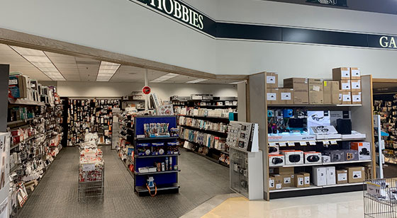

Micro Center

Micro Center is an American computer department store, which has its headquarters in Hilliard, Ohio. It is one of the top 200 of America's largest private companies.
Parent organization: Micro Electronics, Inc.
CEO: Richard M. Mershad (Dec 2002–)
Headquarters: Hilliard, Ohio, United States
Number of locations: 25
Founded: 1979, Columbus, Ohio, United States
Founders: Bill Bayne, John Baker